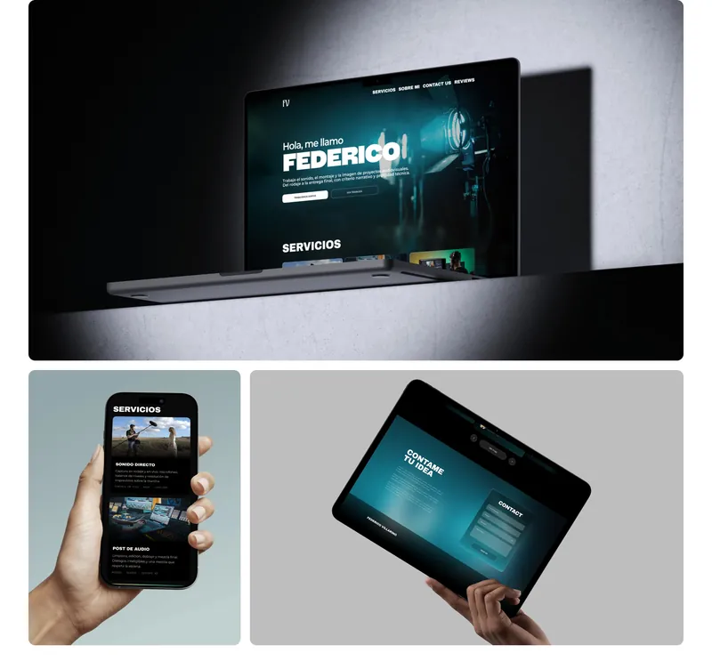
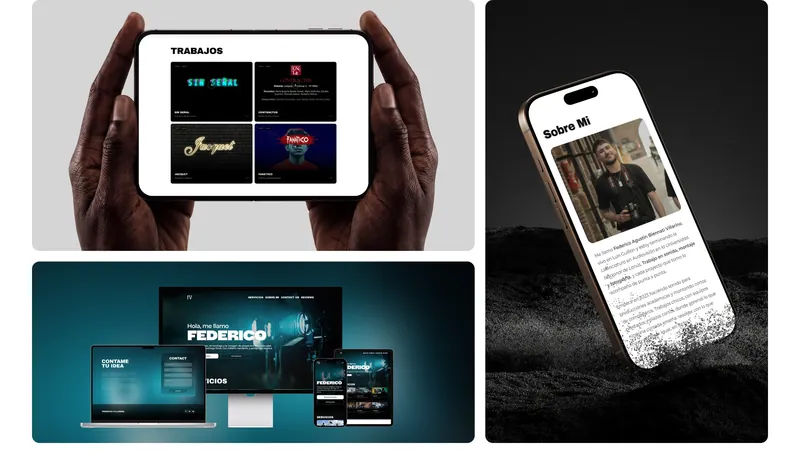
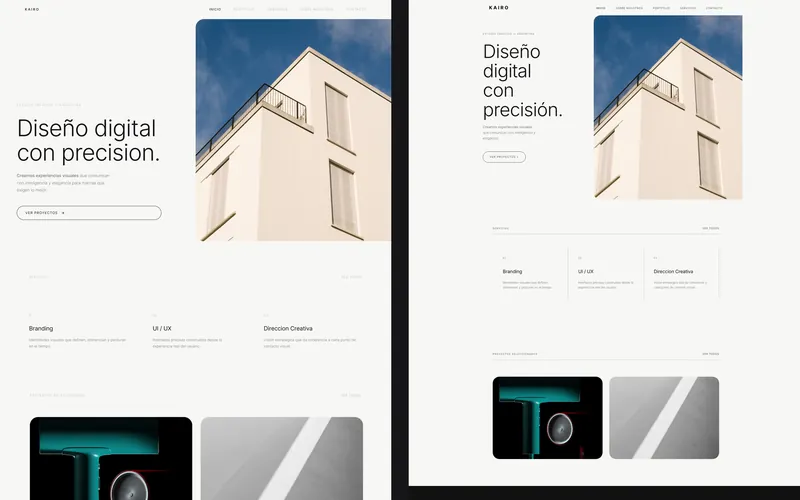

Desarrollo Full Stack
Mi exploración del desarrollo web nació como una extensión natural del diseño UX/UI: llevar mis ideas al código me permite colaborar mejor con otros desarrolladores.

Proyectos
Del diseño en Figma al front-end en React y al backend en Node.js. Tomix Visuals, un proyecto grupal para presentar servicios y equipo, está en camino.

Federico Villarino
Portfolio one page para un técnico audiovisual independiente: su primera presencia digital.
Kairo Creative Studio
Sitio de un estudio creativo ficticio, diseñado en Figma y maquetado en código con fidelidad al diseño.

DonRamón
E-commerce de una cafetería en React: catálogo, carrito persistente y checkout con Firebase.

Backend de e-commerce
API REST en Node.js, Express y MongoDB, con vistas en Handlebars y actualización en tiempo real.

ASENWARE
Diseño y desarrollo del sitio para la llegada a Argentina de esta empresa internacional de alarmas contra incendio.

Nimat Solutions
Rediseño completo del sitio, mejoras de navegación y sistema de tickets personalizado.
Federico Villarino
- Cliente
- Federico Villarino — sonido, montaje y fotografía
- Rol
- Diseño en Figma y desarrollo
- Stack
- HTML, CSS, responsive desde 320 px
Federico trabaja en sonido directo, montaje y fotografía de forma independiente y no tenía ninguna presencia digital: este portfolio es su primera carta de presentación. El desafío era que alguien que recién arranca por su cuenta se viera tan sólido como los trabajos que ya venía entregando.
Diseñé y desarrollé un sitio one page que ordena su material en cinco bloques: servicios, trabajos, una nota personal, reseñas de clientes y contacto.
Decisiones
- El trabajo antes que el texto. Sobre una base oscura, las piezas audiovisuales aparecen en claro y se llevan la atención solas: el visitante ve el trabajo antes de leer una línea sobre él.
- Video sin cargar la página. Los cortometrajes se presentan con la portada fija y un loop al pasar el cursor.
- Del Figma al código, a mano. Maquetado con HTML y CSS, responsive desde 320 px, con el isologotipo desarrollado para el proyecto.


Kairo Creative Studio
- Contexto
- Trabajo final — Escuela Da Vinci
- Rol
- Diseño en Figma e implementación completa
- Stack
- HTML5, CSS3, JavaScript
Kairo es un estudio creativo ficticio, inventado para el trabajo final de la Escuela Da Vinci. El proyecto integra dos materias: la identidad y las interfaces salieron de Diseño Gráfico I, y la maquetación, de la materia de desarrollo. Las piezas del portfolio de Kairo son trabajos míos reales.
Me propuse que la versión en el navegador fuera indistinguible de la maqueta, y esa fidelidad fue lo más trabajoso del proyecto.
Lo que aprendí
- El ancho cambió a mitad de camino. Diseñé sobre 1920 px y la consigna fijó después un contenedor de 1300 px: recompuse proporciones, márgenes y cortes sin perder el ritmo visual. Una decisión de layout tomada en el lienzo no es neutral.
- Codear funciona como auditoría del diseño. Al pasar la maqueta a HTML aparecieron errores tipográficos, subtítulos faltantes y secciones que necesitaban su propio
article. - HTML semántico, una única hoja de estilos con variables CSS en
:root, animaciones CSS3 e íconos SVG de Lucide.

DonRamón
- Contexto
- Proyecto final de React JS — CoderHouse
- Rol
- Diseño de la interfaz e implementación
- Stack
- React 19, Vite, React Router, Firebase
Tienda online de una cafetería: catálogo con filtros por categoría, detalle de producto, carrito persistente y checkout que genera la orden en Firestore.
El diseño no era parte de la consigna, pero armé una interfaz propia porque un e-commerce que no se entiende de un vistazo no cumple su función, por más que el código funcione.
Decisiones
- El carrito vive en un Context, no en props: lo usan el header, el catálogo, el detalle y el checkout.
- El carrito se guarda en
localStoragepara que el usuario no pierda su compra si cierra la pestaña. - Los totales se calculan a partir del carrito en lugar de guardarse aparte, así nunca quedan desincronizados.
- Checkout validado con React Hook Form y notificaciones con React Hot Toast.
Backend de e-commerce
- Contexto
- Programación Backend I — CoderHouse
- Resultado
- Aprobado con 10
- Stack
- Node.js, Express 5, MongoDB, Socket.IO
API de e-commerce que gestiona productos y carritos, con vistas dinámicas en Handlebars y actualización en tiempo real con WebSockets.
Decisiones
- La paginación se resuelve en la base con
mongoose-paginate-v2, y la respuesta ya incluye los links a la página anterior y siguiente. - WebSockets solo donde aportan: el alta y baja de productos en tiempo real usa Socket.IO; el resto va por HTTP.
- Las credenciales van por variables de entorno con
dotenv, nunca en el código.
Lo que más me costó fue el salto al backend: entender cómo se conectan modelo, ruta y vista. Lo que más disfruté fue diseñar los verbos HTTP como un contrato que se explica solo.
Este portfolio
Uno de mis principales proyectos fue este portfolio, donde combiné mi formación con el aprendizaje constante. Empezó en Figma, con wireframes detallados, y después lo implementé con HTML, CSS y JavaScript para que funcione bien en cualquier dispositivo.
Durante el proceso
- Usé CSS Grid para estructurar el contenido de forma eficiente.
- Trabajé con Sass para organizar y optimizar el código CSS.
- Resolví el desafío de adaptar el diseño a distintas resoluciones y consolidé lo que sé de diseño responsive.
Este proyecto no solo mejoró mis habilidades técnicas: también me dio un enfoque más crítico para resolver problemas. Quiero seguir explorando nuevas herramientas y tecnologías.

Tecnologías
Las que uso en esta área en el día a día.
- HTML
- CSS
- Sass
- JavaScript
- React
- Node.js
- Express
- MongoDB
- Firebase
- Figma
Hagamos algo que se note.
¿Tenés un sitio, un producto o una campaña en mente? Contame qué necesitás y lo pensamos juntos. Trabajo en remoto, en español o en inglés.
wikipediatomitob@gmail.com